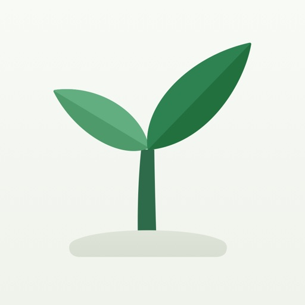
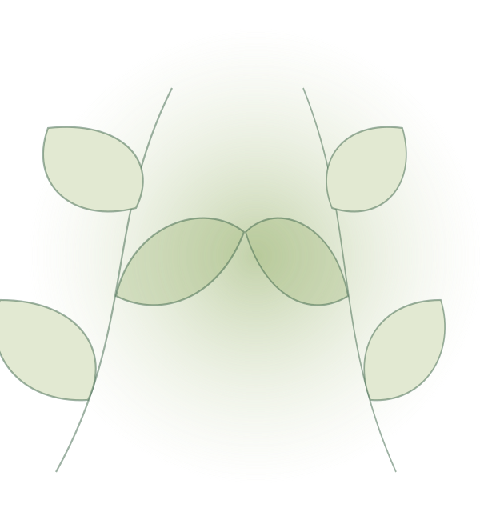
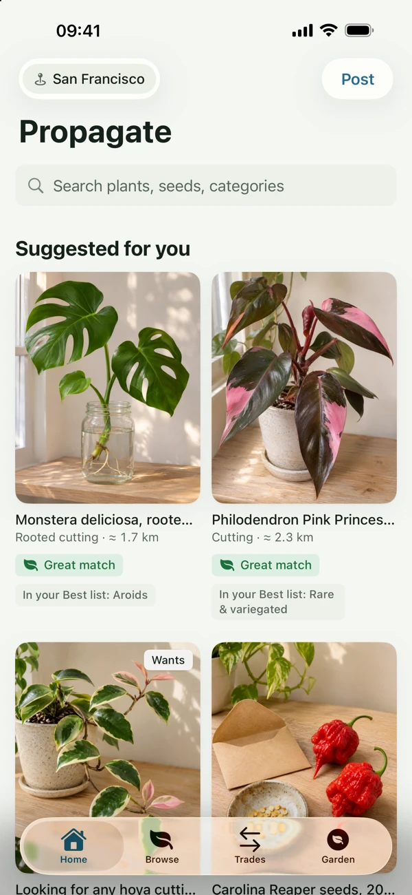

ਜੋ ਕੁਝ ਵਧ ਰਿਹਾ ਹੈ, ਉਸਨੂੰ ਸਾਂਝਾ ਕਰੋ।
ਇੱਕ ਪੇਸ਼ਕਸ਼ ਪੋਸਟ ਕਰੋ ਜਾਂ ਉਹ ਚੀਜ਼ ਲੱਭੋ ਜਿਸਦੀ ਤੁਸੀਂ ਭਾਲ ਕਰ ਰਹੇ ਹੋ। ਫੋਟੋਆਂ ਸ਼ਾਮਲ ਕਰੋ ਅਤੇ ਨੇੜਲੇ ਉਤਪਾਦਕਾਂ ਨੂੰ ਦੱਸੋ ਕਿ ਤੁਹਾਡੇ ਕੋਲ ਕੀ ਹੈ।

Propagateਚੰਗੀਆਂ ਚੀਜ਼ਾਂ ਉਦੋਂ ਵਧਦੀਆਂ ਹਨ ਜਦੋਂ ਤੁਸੀਂ ਉਹਨਾਂ ਨੂੰ ਸਾਂਝਾ ਕਰਦੇ ਹੋ।
ਤੁਹਾਡਾ ਅਗਲਾ ਪੌਦਾ ਤੁਹਾਡੇ ਅਨੁਮਾਨ ਨਾਲੋਂ ਜ਼ਿਆਦਾ ਨੇੜੇ ਹੈ।
ਆਪਣੇ ਸ਼ਹਿਰ ਦੇ ਪੌਦੇ ਉਗਾਉਣ ਵਾਲਿਆਂ ਨਾਲ ਪੌਦੇ, ਕਲਮਾਂ ਅਤੇ ਬੀਜ ਵਟਾਓ। ਘੱਟ ਖਰੀਦਦਾਰੀ, ਵੱਧ ਸਾਂਝ ਅਤੇ ਉਗਾਉਣ ਲਈ ਕੁਝ ਨਵਾਂ।
ਮੁਫ਼ਤ · ਸਿਰਫ਼ ਆਦਾਨ-ਪ੍ਰਦਾਨ · 18+ ਉਮਰ ਦੇ ਲੋਕਾਂ ਲਈ।


ਐਪ ਸਕ੍ਰੀਨਸ਼ੌਟ
ਸਹੂਲਤਾਂ
ਇੱਕ ਪੇਸ਼ਕਸ਼ ਪੋਸਟ ਕਰੋ ਜਾਂ ਉਹ ਚੀਜ਼ ਲੱਭੋ ਜਿਸਦੀ ਤੁਸੀਂ ਭਾਲ ਕਰ ਰਹੇ ਹੋ। ਫੋਟੋਆਂ ਸ਼ਾਮਲ ਕਰੋ ਅਤੇ ਨੇੜਲੇ ਉਤਪਾਦਕਾਂ ਨੂੰ ਦੱਸੋ ਕਿ ਤੁਹਾਡੇ ਕੋਲ ਕੀ ਹੈ।
ਪੌਦੇ, ਕਿਸਮ ਜਾਂ ਦੂਰੀ ਦੁਆਰਾ ਬ੍ਰਾਊਜ਼ ਕਰੋ। ਆਪਣੀ ਕਟਿੰਗ ਦੀ ਪੇਸ਼ਕਸ਼ ਕਰੋ, ਇੱਕ ਸਵਾਲ ਪੁੱਛੋ ਅਤੇ ਇਕੱਠੇ ਆਦਾਨ-ਪ੍ਰਦਾਨ ਕਰਨ ਲਈ ਸਹਿਮਤ ਹੋਵੋ।
ਇੱਕ ਜਨਤਕ ਮੀਟਿੰਗ ਦੀ ਯੋਜਨਾ ਬਣਾਓ, ਆਦਾਨ-ਪ੍ਰਦਾਨ ਨੂੰ ਪੂਰਾ ਕਰੋ ਅਤੇ ਇੱਕ ਸਮੀਖਿਆ ਛੱਡੋ। ਤੁਹਾਡੀ ਪ੍ਰੋਫਾਈਲ 'ਤੇ ਸਿਰਫ਼ ਤੁਹਾਡਾ ਸ਼ਹਿਰ ਦਿਖਾਇਆ ਜਾਵੇਗਾ, ਤੁਹਾਡਾ ਪਤਾ ਨਹੀਂ।
ਐਪ ਵੇਖੋ
ਅਸਲ ਸਕ੍ਰੀਨ। ਅੰਦਰ ਕੀ ਹੈ, ਇਸ ਬਾਰੇ ਬਿਹਤਰ ਅਨੁਭਵ।
FAQ
ਸ਼ੁਰੂ ਕਰਨ ਤੋਂ ਪਹਿਲਾਂ ਜਵਾਬ
ਨਹੀਂ। Propagate ਸਿਰਫ਼ ਅਦਲਾ-ਬਦਲੀ ਲਈ ਹੈ। ਹਰ ਪੇਸ਼ਕਸ਼ ਦਿਖਾਉਂਦੀ ਹੈ ਕਿ ਦੋਵੇਂ ਧਿਰਾਂ ਕੀ ਦੇਣਗੀਆਂ। ਐਪ ਵਿੱਚ ਕੋਈ ਭੁਗਤਾਨ ਨਹੀਂ ਹੁੰਦਾ।
ਪੌਦੇ, ਪੌਦਿਆਂ ਦੀਆਂ ਕਟਿੰਗਾਂ, ਬੀਜ, ਪੌਦਿਆਂ ਨੂੰ ਵੰਡ ਕੇ ਲਗਾਉਣਾ ਅਤੇ ਬਾਗਬਾਨੀ ਦੀਆਂ ਵਸਤਾਂ ਜਿਵੇਂ ਕਿ ਬਰਤਨ ਅਤੇ ਮਿੱਟੀ। ਕੁਝ ਵੀ ਪੋਸਟ ਕਰਨ ਤੋਂ ਪਹਿਲਾਂ ਸਮੂਹ ਦੇ ਨਿਯਮ ਪੜ੍ਹੋ।
ਨਹੀਂ। ਤੁਹਾਡੀ ਪ੍ਰੋਫਾਈਲ ਵਿੱਚ ਤੁਹਾਡਾ ਸ਼ਹਿਰ ਦਿਖਾਈ ਦਿੰਦਾ ਹੈ। ਜੇਕਰ ਤੁਸੀਂ ਆਪਣਾ ਟਿਕਾਣਾ ਸਾਂਝਾ ਕਰਨਾ ਚਾਹੁੰਦੇ ਹੋ, ਤਾਂ ਸੇਵ ਕਰਨ ਤੋਂ ਪਹਿਲਾਂ ਇਸਨੂੰ ਲਗਭਗ ਇੱਕ ਕਿਲੋਮੀਟਰ ਦੇ ਦਾਇਰੇ ਵਿੱਚ ਦਰਸਾਇਆ ਜਾਂਦਾ ਹੈ। ਕਿਸੇ ਜਨਤਕ ਥਾਂ 'ਤੇ ਮਿਲਣ ਦਾ ਪ੍ਰਬੰਧ ਕਰੋ।
Propagate ਇੱਕ ਨਵਾਂ ਭਾਈਚਾਰਾ ਹੈ। ਉਪਲਬਧਤਾ ਤੁਹਾਡੇ ਸ਼ਹਿਰ ਉੱਤੇ ਨਿਰਭਰ ਕਰਦੀ ਹੈ। ਵਟਾਂਦਰੇ ਦੀ ਪਹਿਲੀ ਪੇਸ਼ਕਸ਼ ਜਾਂ ਲੱਭ ਰਹੇ ਪੌਦੇ ਬਾਰੇ ਪੋਸਟ ਕਰੋ ਅਤੇ ਹੋਰ ਪੌਦਾ-ਪ੍ਰੇਮੀਆਂ ਨੂੰ ਜੁੜਨ ਲਈ ਸੱਦੋ।
ਮੁਫ਼ਤ · ਸਿਰਫ਼ ਆਦਾਨ-ਪ੍ਰਦਾਨ · 18+ ਉਮਰ ਦੇ ਲੋਕਾਂ ਲਈ।
18 ਸਾਲ ਤੋਂ ਵੱਧ ਉਮਰ ਦੇ ਲੋਕਾਂ ਲਈ। ਕਿਸੇ ਜਨਤਕ ਥਾਂ 'ਤੇ ਦਿਨ ਦੀ ਰੌਸ਼ਨੀ ਵਿੱਚ ਮਿਲੋ, ਅਤੇ ਕਿਸੇ ਦੋਸਤ ਨੂੰ ਦੱਸੋ ਕਿ ਤੁਸੀਂ ਕਿੱਥੇ ਜਾ ਰਹੇ ਹੋ। ਸਮੂਹ ਦੀਆਂ ਵਿਸ਼ੇਸ਼ਤਾਵਾਂ ਲਈ iCloud ਦੀ ਲੋੜ ਹੈ।